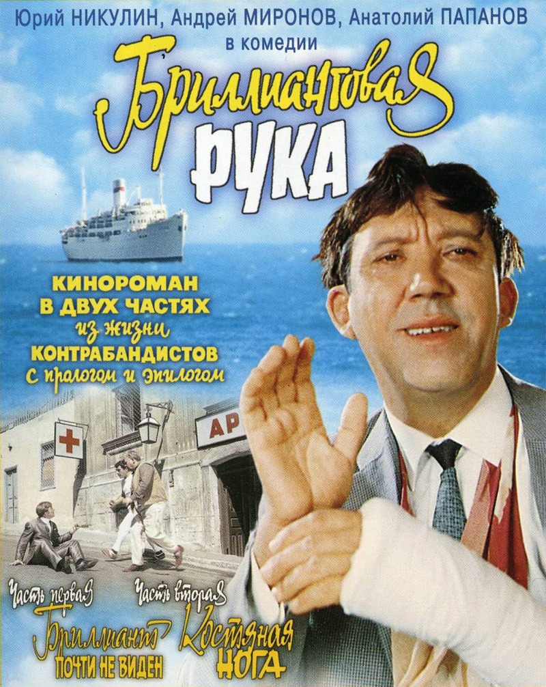
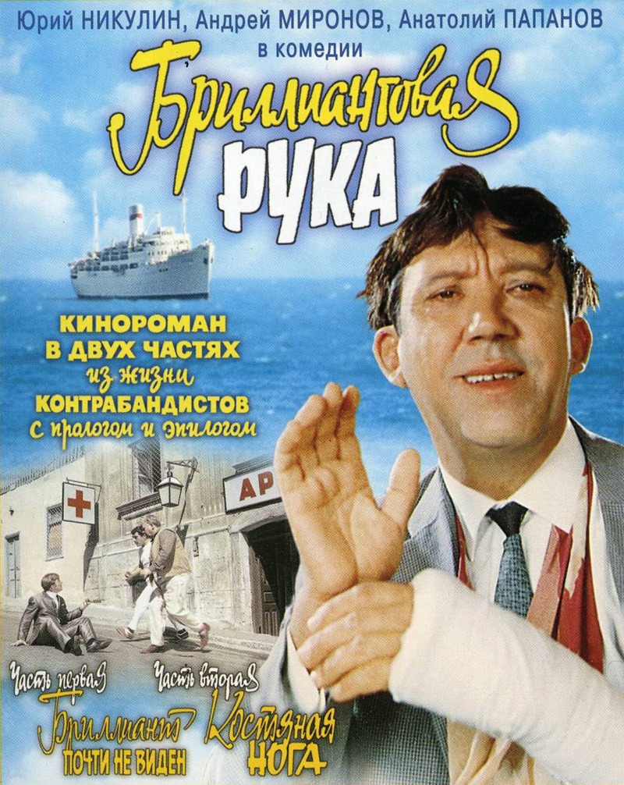
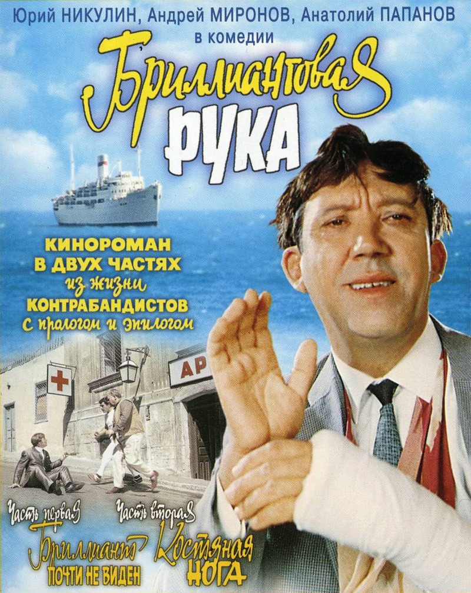

Заведующий детским садом Евгений Иванович Трошкин — человек исключительно мирный и добрый. Однако его жизнь круто меняется, когда милиция просит его о помощи: он как две капли воды похож на главаря опасной банды по кличке «Доцент», который организовал дерзкое ограбление и похитил уникальный золотой шлем Александра Македонского. Чтобы найти украденную реликвию, Трошкину приходится внедриться в тюрьму, где отбывает срок подельник «Доцента», выдав себя за авторитетного преступника. Парадокс ситуации в том, что его наивность, интеллигентность и неподдельная доброта, которую он не может скрыть, заставляют настоящих уголовников искренне уважать «авторитетного вора в законе». Фильм мастерски сочетает яркую комедию положений с тонкой сатирой на уголовный мир, а фразы вроде «Заплатишь ты мне за всё: за мальчика, за папу, за дедушку Лёву!» прочно вошли в народную речь.
 «В бой идут одни «старики» (1973)
«В бой идут одни «старики» (1973)
Эта картина Леонида Быкова — это не просто военный фильм, а глубокая и пронзительная человеческая драма. Действие разворачивается в 1943 году в истребительном авиаполку, где командир эскадрильи капитан Титаренко по прозвищу «Маэстро» создаёт из своих лётчиков хор. Музыка становится для них спасением, единственной возможностью остаться людьми среди ужаса войны, способом почувствовать жизнь за пределами кабины самолёта. Понятие «старики» здесь имеет особый смысл: так называют опытных пилотов, прошедших через множество боёв, в противовес «желторотикам» — молодым пополнениям, которым только предстоит научиться выживать. Фильм с невероятной теплотой и без лишнего пафоса показывает фронтовое братство, первую любовь, тяжесть потерь и цену победы, а песня «Смуглянка» в исполнении героев стала одним из символов фильма.
 «Неуловимые мстители» (1966)
«Неуловимые мстители» (1966)
Яркий, динамичный и невероятно популярный приключенческий фильм, действие которого происходит во время Гражданской войны в России. Картина рассказывает историю четверых подростков: циркача Васьки, его друга Яшки-цыгана, сына кузнеца Ксанки и дочери командира красного отряда Даньки. Объединившись, они создают собственный партизанский отряд, чтобы бороться с бандами белогвардейцев и атамана Бурнаша. «Неуловимые» совершают дерзкие вылазки, освобождают пленных, обезвреживают вражеских лазутчиков и постоянно ускользают от преследования, став настоящей легендой. Фильм стал культовым для советской детворы, сочетая в себе романтику подвига, идеи дружбы и справедливости с почти вестерновой энергией и запоминающимися образами героев. Картина также знаменита своей великолепной музыкой, особенно песней «Погоня».